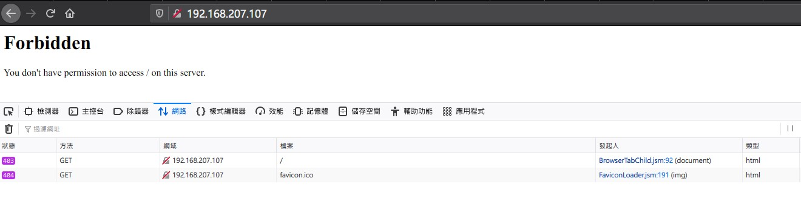
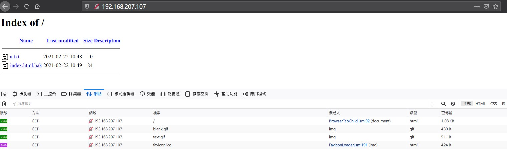

httpd.conf 研究筆記
Contents
httpd 版本資訊
|
|
敬啟者
開頭就一堆屁話，根本沒有人會看的 (愛開玩笑 自己的筆記也屁話一堆還敢說開發者 XD
節錄幾個重點好了
- 更多資訊請到 Apache 2.4 版官方文件 參閱，或者更詳細的 指示 (Directives)
- 配置 logfile 路徑規則。
如果路徑是由 / 起始的，httpd 會使用絕對路徑 (換句話說: 直接在 Linux 下 ls -al <path> 的地方)。
若不是，則使用相對路徑，以 ServerRoot 當作參考點，舉個例子:
當 ServerRoot /www 時 log/access_log 的路徑會是 /www/log/access_log
ServerRoot
ServerRoot 是 httpd server 的根目錄 (The top of the directory tree)。存放 設定檔 (Configuration) 、 錯誤 (error)、 日誌檔 (log file)。
不能在最後加上斜線 (slash) 也就是 /
不能在最後加上斜線 (slash) 也就是 /
不能在最後加上斜線 (slash) 也就是 /
Listen
中文應該翻成監聽，設定讓 Apache 綁定 (bind) 在哪個 IP:Port。
|
|
使用
|
|
個人覺得 ss 跑出來的畫面很醜、不易讀，即使經過 column 排版後依舊。還是一併附上
ss command take 2 lines for each result
|
|
可以觀察 httpd 到底使用 (綁定) 了哪些 IP 和 Port。
Module 模組
其實在 httpd.conf 裡面寫的是 Dynamic Shared Object (DSO)，想說標題打模組會比接地氣。
載入模組可以透過
|
|
官方預設出廠 httpd.conf 會使用 Include 將 ServerRoot 下的 conf.modules.d 目錄內所有 .conf 加入
|
|
然後官方有提到，已經被編譯的靜態模組 (Statically compiled modules) 並不用在這邊被宣告載入。列出已編譯的靜態模組可以使用:
|
|
User and Group
指定 httpd 這個 daemon 使用哪個 user , group 運作。可以透過 ps 指令觀察:
|
|
===========================================
Main server config
===========================================
上面的設定值都是 daemon 會使用到的，接下來就要進入到真正的主 conf 檔
主 conf 內設定的內容是可以被其他在 conf.d/*.conf 裡面的 <VirtualHost> 覆蓋 (override)
簡單來說就是提供 <VirtualHost> 區塊預設值的概念。
ServerName
如果沒有加
|
|
註: localhost 要可以在 /etc/hosts 指向 127.0.0.1
測試 conf 檔的 Syntax 是否正確則會出現這個警告。不過最終還是告訴我們語法正確啦~ 不用擔心
|
|
Directory /
這個由短短四行組成的預設值是要讓 <Directory> 變成白名單制。只有要放行的目錄才有訪問權限
預設值
|
|
【實驗】Require all granted
花了一點時間做實驗，實際操作幫助理解。 Witness me !!!
在 <Directory /> 我們更改預設值，也就是 Require all granted。
接著更改 DocumentRoot /eric_httpd_home 並使用
|
|
建立該目錄。這邊想稍微先提一下 為什麼不要建在 /var/www/html 下面就好呢 (即 /var/www/html/eric_httpd_home)
原因是在 httpd.conf 預設有針對 (1) /var/www (2) /var/www/html 做存取相關設定。那麼這些設定是會自動繼承到該目錄底下的所有子目錄
注意 welcome.conf !!
注意 welcome.conf !!
注意 welcome.conf !!
這個檔案會在 RootDocument 沒有 index 的情況下顯示 Apache 歡迎/測試畫面
這會影響實驗，因此先將這個檔案暫時拿掉
|
|
將 httpd.conf 主設定檔存檔，並檢查語法是否錯誤後重啟 (因為實驗機，採取最嚴謹的做法)
|
|
註: 語法若沒有問題會顯示 Syntax OK
直接以 IP 訪問，會得到
|
|

▲ “403 Forbiden”
「嘿嘿~ 見鬼啦!」 我們剛剛不是將 / 的權限改成 Require all granted 嗎?
怎麼沒東西 ◢▆▅▄▃ 崩╰(〒皿〒)╯潰 ▃▄▅▆◣
會顯示 403 Forbiden 的原因有兩個:
/目錄下沒有期待的 index page。預設是index.html
我們可以在主 conf 也就是 httpd.conf 當中找到這個片段
|
|
片段中定義了預設索引檔 (index file) 為 index.html
- 沒有開啟目錄瀏覽功能 (directory browsing)
How do I disable directory browsing?
也就是
|
|
將這行暫時加入 <Directory /> 當中，並重啟 httpd 即可看到目錄下的所有檔案
|
|
註: Directory 路徑有沒有使用 "" 包起來都可以。

▲ 檔案瀏覽功能
這個時候如果再將權限改回 Require all denied 並重啟 httpd 則會看到 “403 Forbiden”\
常見 <Directory> 內設定值
Options
Options Directive
官方對 Option 這個指示 (Diretive) 的描述: Configures what features are available in a particular directory
讓管理員決定針對指定目錄開啟哪些功能
Syntax 語法
|
|
或者自由組合 (開啟) 下列選項:
|
|
舉例:
|
|
沒錯，就是上面實驗中開啟目錄瀏覽的關鍵語法~
還記得實驗理面有提到 <Directory> 是有繼承關係的嗎?
因為這個關係 Options 支援 +/- 設定
舉例 【1】:
|
|
子目錄沒有使用 +/- 設定的結果就是:
/web/docs/spec 只獲得 Includes 的功能
舉例【2】:
|
|
子目錄有使用 +/- 設定的結果就是:
/web/docs/spec 除了獲得 Includes 的功能以外，也同樣獲得 FollowSymLinks。並且把 Indexes 關閉。
AllowOverride
一句話: 控制該目錄下 .htaccess override 的項目
只要該目錄下沒有 .htaccess 一律設定成 None，這也適用大部分的情況
關於 .htaccess 有興趣的可以參考 Apache HTTP Server Tutorial: .htaccess files
Require
一句話: 扮演大門警衛角色 決定誰可以訪問這個目錄
Access Control
Syntax 語法
|
|
舉例【黑名單】:
|
|
|
|
DirectoryIndex
一句話: 索引檔名稱/順序
DirectoryIndex Directive
這項功能是屬於 mod_dir 內的，在主 conf 檔中區塊是長這樣:
|
|
不過經過實測 DirectoryIndex 可以直接加在 <Directory> 區塊內沒問題 大丈夫~
舉例:
|
|
|
|
上面兩個效果都相同
|
|
上面這個呢…. 索引檔只會被設定成 index.php 不太清楚為什麼又有這種操作 XD
VirtualHost
VirtualHost 的功能，就是使用 HTTP Header 裡面的 Hosts 來判定 Client 端要求哪個站台 (site) 的內容
附上 HTTP Request Header
爆雷實驗結果
只要 /etc/httpd/conf.d/ 內有任何一個設定檔使用 VirtualHost，httpd 就必定會匹配 HTTP Request Header 內的 Hosts 資料，綁域名就是這個意思。
若匹配不到 AND /etc/httpd/conf.d/ 內有多個成功配置的 VirtualHost，那就會以設定檔 Inode 小的為主 (猜測)。只有一個的話就非他莫屬。並不會有這篇說的 500 Internal Server Error 出現
|
|
查詢 Innode 方式:
|
|
|
|
server-status/info
此篇筆記產出的原因與主要目的，就是某幾台 Web server 突然在監控抓不到。不管是以 IP 或者域名直接訪問 /server-status or server-info 都出現 “假 404” 的頁面 (畫面上顯示 404 但 F12 看到的是 200 OK 有成功 GET 到頁面)
本來以為是 RD 因為要防堵敏感資訊洩漏而將 /server-status 與 /server-info 導向 “假 404”，後來經過電聯後才釐清並不是刻意阻擋 /server-status，執行邏輯是當找不到此路徑 (真的會噴 404 Not Found 的情況) -> 轉向 “假 404”
驗證方式就是直接訪問 /jahsdjugu 黑白打、根本不存在的路徑，也成功訪問 “假 404”
我的方法
不使用 /etc/httpd/conf.d/httpd-info.conf (改名 .bak) 就好
額外新增檔案 /etc/httpd/conf.d/server_status.conf
檔案內容:
|
|
ServerName 的部分如果要讓辦公室本機可以訪問，就必須改成 192.168.x.x。原因很簡單，辦公室瀏覽器帶的 Request Header 裡面 Host 欄位是 192.168.x.x
如果只是要讓 VM 本機內的 LibreNMS Apache Agent 抓到數值 Require ip 127.0.0.1 或者 Require host localhost 即可。
Rocket 討論串在 IT-System 關鍵字: 假 404
Patrick 的方法
更改 /etc/httpd/conf.d/httpd-info.conf
|
|
補一行 ServerName localhost 上去就好
兩全其美
LibreNMS Apache Agent 預設是去抓取 http://localhost/server-status，如果照上面我的方法當中 ServerName localhost 這樣辦公室沒辦法透過 http://<server_ip>/server-status 看到 status 頁面。
透過使用 ServerAlias 就能在不複製變成兩段設定檔的情況下達成
localhost 訪問 (O)
IP 訪問 (O)
|
|
關於 ServerAlias 可以參考 httpd-ServerAlias Directive
Author 老柯
LastMod 2022-07-08 (d4cb1c8)